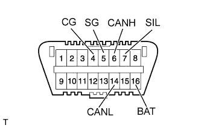

ПОИСК НЕИСПРАВНОСТЕЙ В СИСТЕМАХ, УПРАВЛЯЕМЫХ ЭБУ > ОБЩИЕ СВЕДЕНИЯ |
| ПОРЯДОК ПОИСКА НЕИСПРАВНОСТЕЙ |
| Тип процедуры | Описание | Метод поиска неисправности |
| Диагностика на основании DTC | Процедура диагностики основана на сохраненных кодах DTC. | Неисправная деталь определяется в соответствии с условиями обнаружения DTC с использованием процесса отбора. Возможные неисправные участки поочередно отбрасываются с помощью портативного диагностического прибора и проверки соответствующих деталей. |
| Диагностика на основании признаков (коды DTC не сохранены) | Процедура диагностики основана на признаках неисправности. | Неисправная деталь определяется в соответствии с признаками неисправности с использованием процесса отбора. Возможные неисправные участки поочередно отбрасываются с помощью портативного диагностического прибора и проверки соответствующих деталей. |
| ОПИСАНИЕ |
| РАЗЪЕМ ШИНЫ ДАННЫХ 3 (DLC3) |
|  |
В ЭБУ автомобиля используется протокол обмена данными ISO 15765-4. Расположение контактов на DLC3 отвечает требованиям стандарта SAE J1962 и согласуется с протоколом ISO 15765-4.
| Номера контактов (обозначения) | Описание контактов | Условие | Заданные условия |
| 7 (SIL) - 5 (SG) | Линия "+" шины | Во время передачи | Формирование импульсов |
| 4 (CG) - масса | Масса шасси | Всегда | Менее 1 Ом |
| 5 (SG) - масса | Сигнальная масса | Всегда | Менее 1 Ом |
| 16 (BAT) - масса | Положительный вывод аккумуляторной батареи | Всегда | 11 – 14 В |
| 6 (CANH) - 14 (CANL) | Линия шины CAN | Зажигание выключено* | 54–69 Ом |
| 6 (CANH) - 4 (CG) | Линия шины CAN высокого уровня | Зажигание выключено* | 200 Ом или более |
| 14 (CANL) - 4 (CG) | Линия шины CAN низкого уровня | Замок зажигания в положении OFF (ВЫКЛ)* | 200 Ом или более |
| 6 (CANH) - 16 (BAT) | Линия шины CAN высокого уровня | Замок зажигания в положении OFF (ВЫКЛ)* | 6 кОм или более |
| 14 (CANL) - 16 (BAT) | Линия шины CAN низкого уровня | Замок зажигания в положении OFF (ВЫКЛ)* | 6 кОм или более |
Подсоедините кабель портативного диагностического прибора к DLC3, включите зажигание и используйте диагностический прибор. Если на дисплей выводится сообщение об ошибке связи, проблема может быть как в автомобиле, так и в диагностическом приборе.